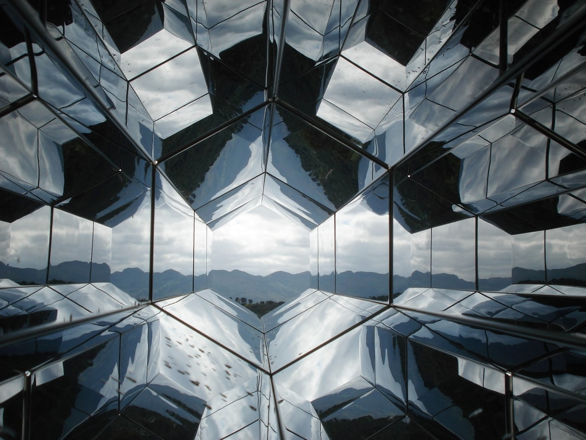
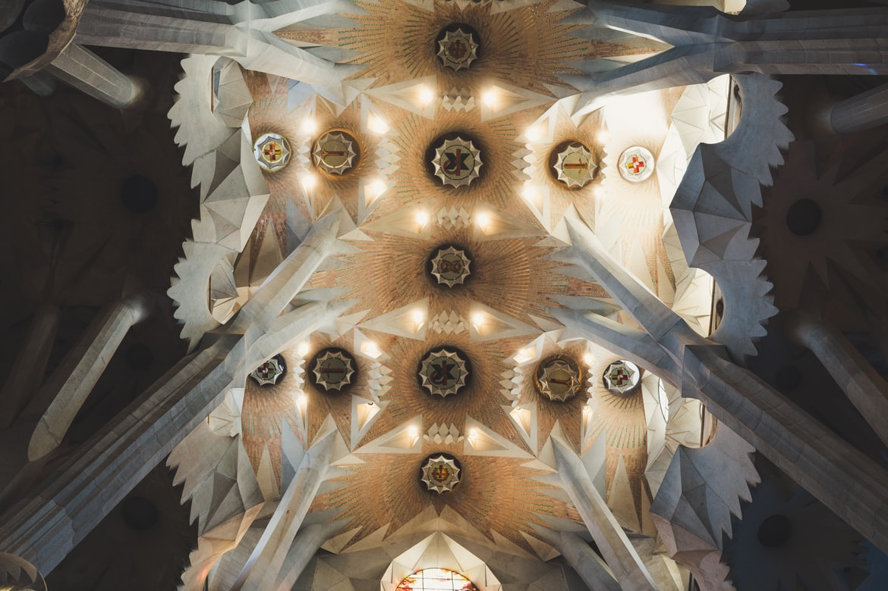

Vision
We are the worldwide professional body for arts residencies, ensuring sustainability and development of the field through enabling connection and facilitating professional development for our member organisations.
Mission
The mission of CELESTIAL
Our History
CELESTIAL was conceived in Greece in 1992 and born in Germany in 1993. It began as a volunteer organisation and informal network, to represent and support the needs of residential arts centres and residency programs. In 2003 CELESTIAL was given official legal status when it was registered in the Netherlands as a Foundation. Lars Bounder, a founding member as well as the first president of Res Artis, tells the story of the birth of CELESTIAL and our 26 year history in this short documentary: CELESTIAL: The very Beginning’